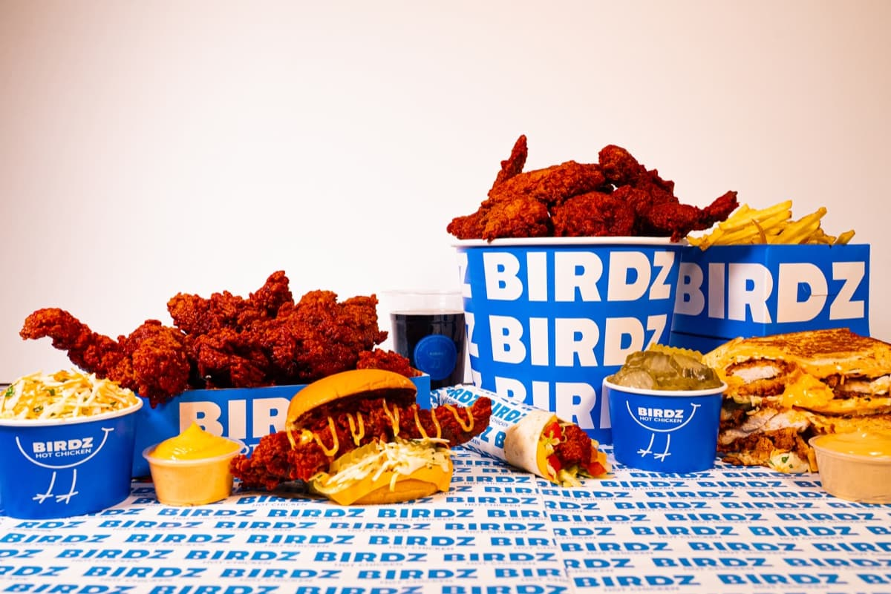
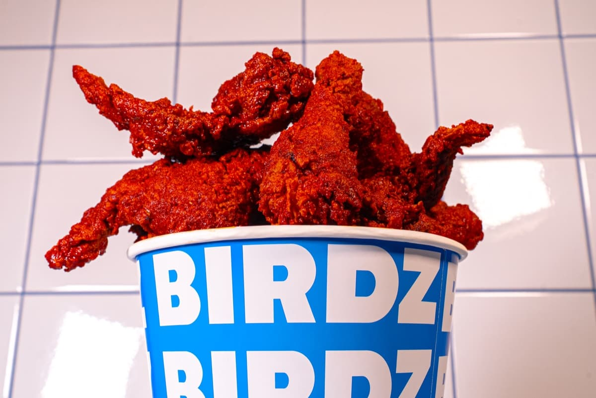
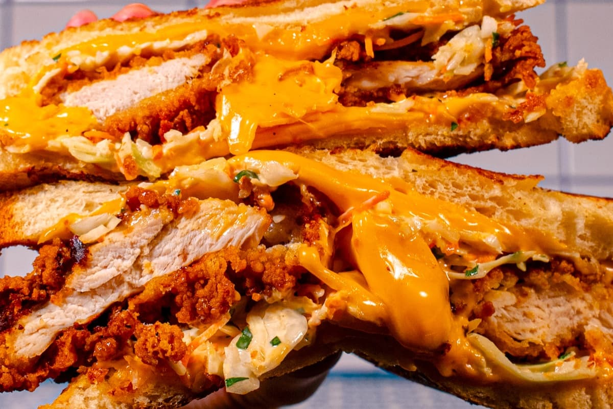

Design graphique

Birdz — menu
2025
Un shooting produit complet avant l'ouverture, pour les menus, les visuels et les réseaux
Avant son ouverture, Birdz avait besoin de photos de toute sa gamme de poulet façon Nashville pour ses menus, ses visuels et ses réseaux sociaux. Voici une partie des images réalisées lors du shooting.
Lister toute la gamme à photographier avant l'ouverture : tenders, burgers, sandwichs, accompagnements, menus.
Un décor aux couleurs de la marque : carrelage blanc, packagings bleus, et le rouge du poulet Nashville en vedette.
Chaque produit sous plusieurs angles, du plan d'ensemble au gros plan qui donne faim.
Des images prêtes pour les menus, l'affichage en boutique et les réseaux sociaux.

Toute la gamme réunie : une seule image pour présenter la carte.

Le rouge Nashville en vedette, le bleu Birdz en écrin.

Des gros plans pensés pour donner faim, du menu jusqu'aux réseaux.
L'envers du décor : la table dressée, les produits en place, juste avant le déclic.
2025

2025